Lesson 10: lists
Lesson 10: Lists
/en/word/line-and-paragraph-spacing/content/
Introduction
Bulleted and numbered lists can be used in your documents to outline, arrange, and emphasize text. In this lesson, you will learn how to modify existing bullets, insert new bulleted and numbered lists, select symbols as bullets, and format multilevel lists.
Watch the video below to learn more about lists in Word.

To create a bulleted list:
- Select the text you want to format as a list.
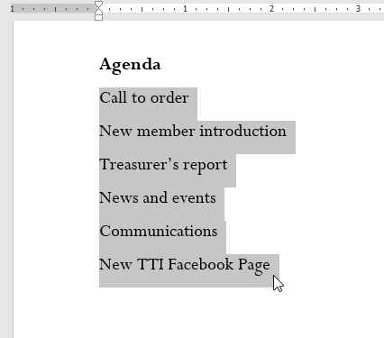
2. On the Home tab, click the drop-down arrow next to the Bullets command. A menu of bullet styles will appear.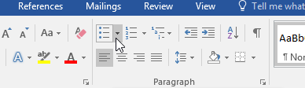
3. Move the mouse over the various bullet styles. A live preview of the bullet style will appear in the document. Select the bullet style you want to use.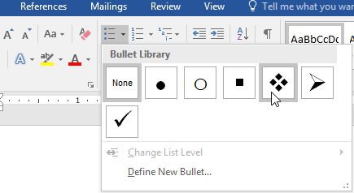
4. The text will be formatted as a bulleted list.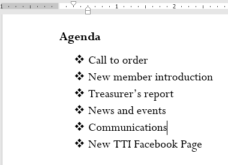
Options for working with lists
- To remove numbers or bullets from a list, select the list and click the Bulleted or Numbered list command.
- When you're editing a list, you can press Enter to start a new line, and the new line will automatically have a bullet or number. When you've reached the end of your list, press Enter twice to return to normal formatting.
- By dragging the indent markers on the Ruler, you can customize the indenting of your list and the distance between the text and the bullet or number.
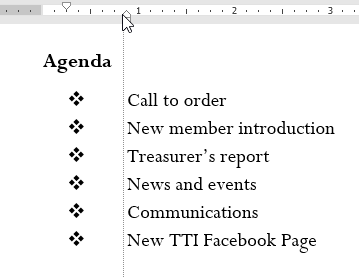
To create a numbered list:
When you need to organize text into a numbered list, Word offers several numbering options. You can format your list with numbers, letters, or Roman numerals.
- Select the text you want to format as a list.
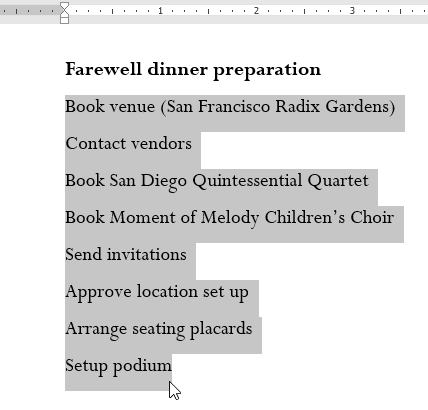
2. On the Home tab, click the drop-down arrow next to the Numbering command. A menu of numbering styles will appear. 3. Move the mouse over the various numbering styles. A live preview of the numbering style will appear in the document. Select the numbering style you want to use.
3. Move the mouse over the various numbering styles. A live preview of the numbering style will appear in the document. Select the numbering style you want to use.
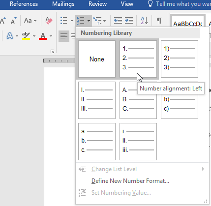
4. The text will format as a numbered list.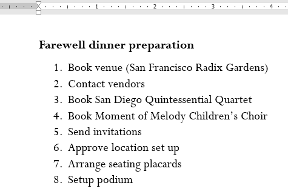
To restart a numbered list:
If you want to restart the numbering of a list, Word has a Restart at 1 option. It can be applied to numeric and alphabetical lists.
- Right-click the list item you want to restart the numbering for, then select Restart at 1 from the menu that appears.
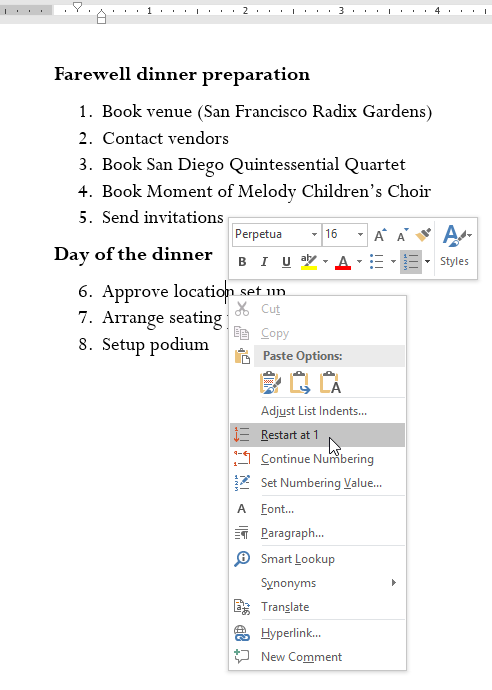
2. The list numbering will restart.
You can also set a list to continue numbering from the previous list. To do this, right-click and select Continue Numbering.
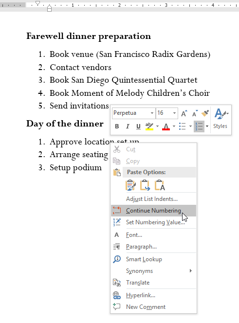
Customizing bullets
Customizing the look of the bullets in your list can help you emphasize certain list items and personalize the design of your list. Word allows you to format bullets in a variety of ways. You can use symbols and different colors, or even upload a picture as a bullet.
To use a symbol as a bullet:
- Select an existing list you want to format.
 2. On the Home tab, click the drop-down arrow next to the Bullets command. Select Define New Bullet from the drop-down menu.
2. On the Home tab, click the drop-down arrow next to the Bullets command. Select Define New Bullet from the drop-down menu.
 3. The Define New Bullet dialog box will appear. Click the Symbol button.
3. The Define New Bullet dialog box will appear. Click the Symbol button.
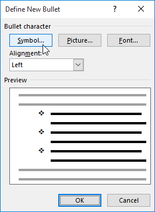
4. The Symbol dialog box will appear. 5. Click the Font drop-down box and select a font. The Wingdings and Symbol fonts are good choices because they have many useful symbols. 6. Select the desired symbol, then click OK. 7. The symbol will appear in the Preview section of the Define New Bullet dialog box. Click OK.
7. The symbol will appear in the Preview section of the Define New Bullet dialog box. Click OK.
 8. The symbol will appear in the list.
8. The symbol will appear in the list.
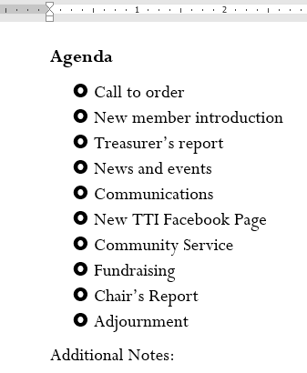
To change the bullet color:
- Select an existing list you want to format.
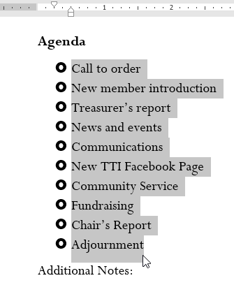
2. On the Home tab, click the drop-down arrow next to the Bullets command. Select Define New Bullet from the drop-down menu.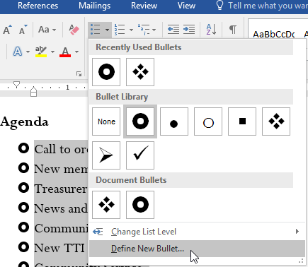
3. The Define New Bullet dialog box will appear. Click the Font button.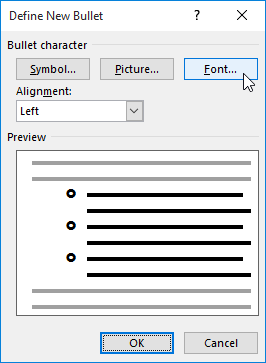
4. The Font dialog box will appear. Click the Font Color drop-down box. A menu of font colors will appear. 5. Select the desired color, then click OK. 6. The bullet color will appear in the Preview section of the Define New Bullet dialog box. Click OK.
6. The bullet color will appear in the Preview section of the Define New Bullet dialog box. Click OK.
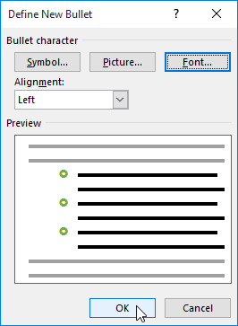
7. The bullet color will change in the list.
Multilevel lists
Multilevel lists allow you to create an outline with multiple levels. Any bulleted or numbered list can be turned into a multilevel list by using the Tab key.

To create a multilevel list:
- Place the insertion point at the beginning of the line you want to move.
 2. Press the Tab key to increase the indent level of the line. The line will move to the right.
2. Press the Tab key to increase the indent level of the line. The line will move to the right.

To increase or decrease an indent level:
You can make adjustments to the organization of a multilevel list by increasing or decreasing the indent levels. There are several ways to change the indent level.
- To increase the indent by more than one level, place the insertion point at the beginning of the line, then press the Tab key until the desired level is reached.
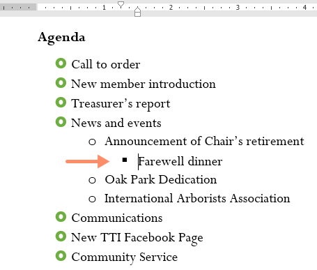
* To decrease the indent level, place the insertion point at the beginning of the line, then hold the Shift key and press the Tab key.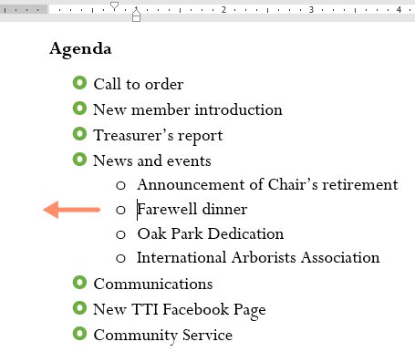
* You can also increase or decrease the levels of text by placing the insertion point anywhere in the line and clicking the Increase Indent or Decrease Indent commands.
When formatting a multilevel list, Word will use the default bullet style. To change the style of a multilevel list, select the list, then click the Multilevel list command on the Home tab.

Challenge!
- Open our practice document.
- Scroll to page 3.
- Select the text under New Members starting with Carolyn and ending with Co-Treasurer, and format it as a bulleted list.
- With the text still selected, use the Define New Bullet dialog box to change the bullets to a green star. Hint: You can find a star in the Wingdings font.
- Increase the indent level by 1 for the lines Social Media Marketing, Fundraising, and *Co-Treasurer*.
- Increase the indent level by 2 for the line Primarily Europe.
- In the Treasurer's Report list, decrease the indent level by 1 for the line Amount available this month.
- In the Communications Report list, restart the numbering at 1.
- When you're finished, your page should look something like this:
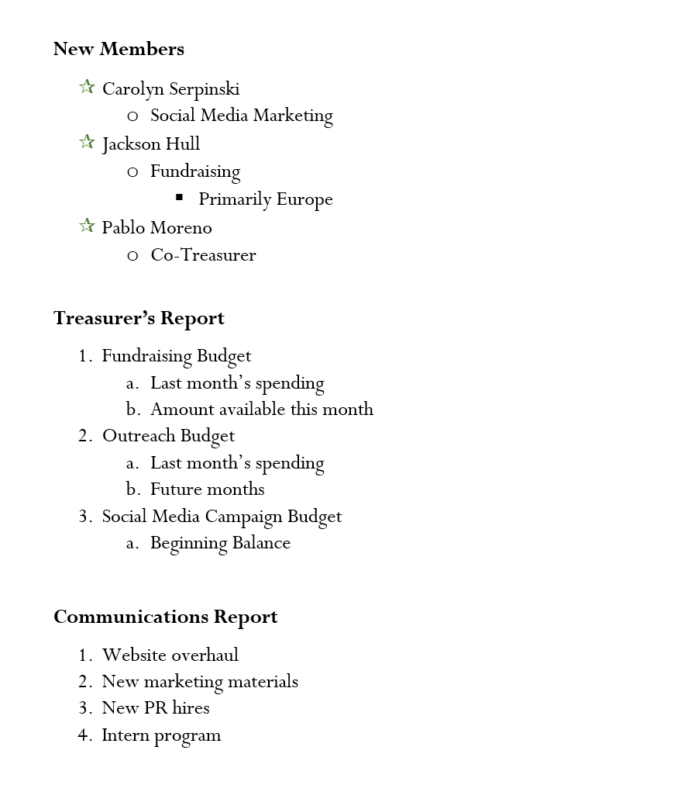
/en/word/links/content/